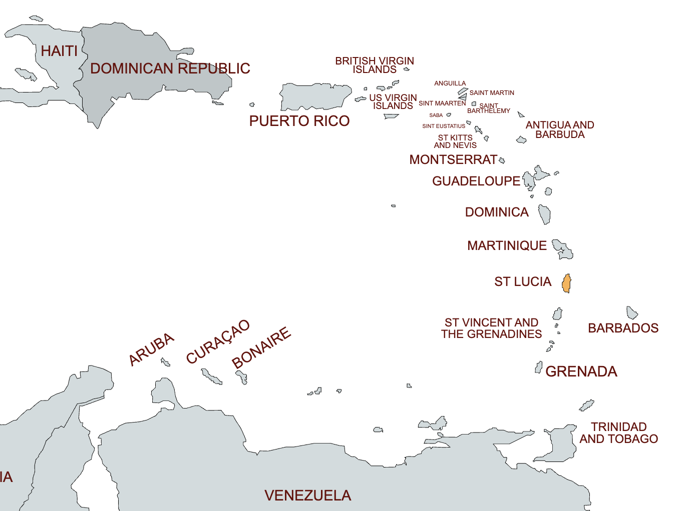
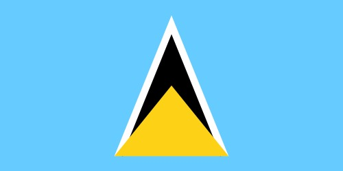
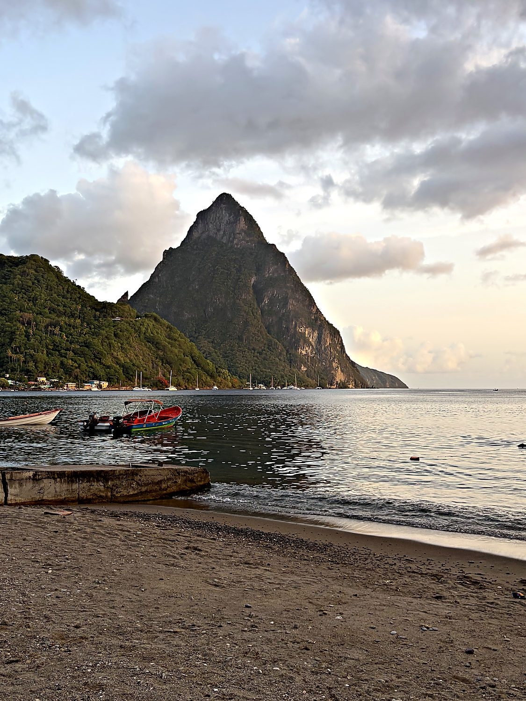
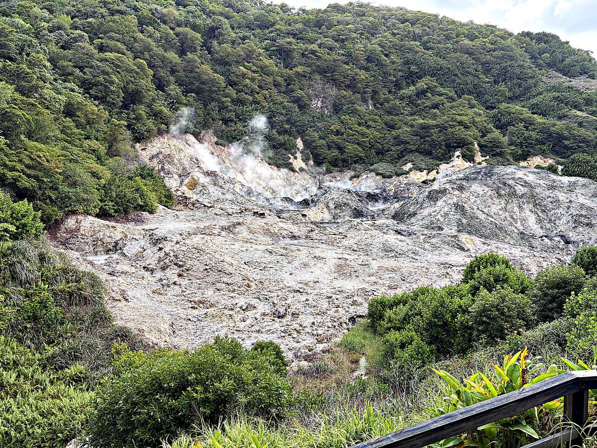
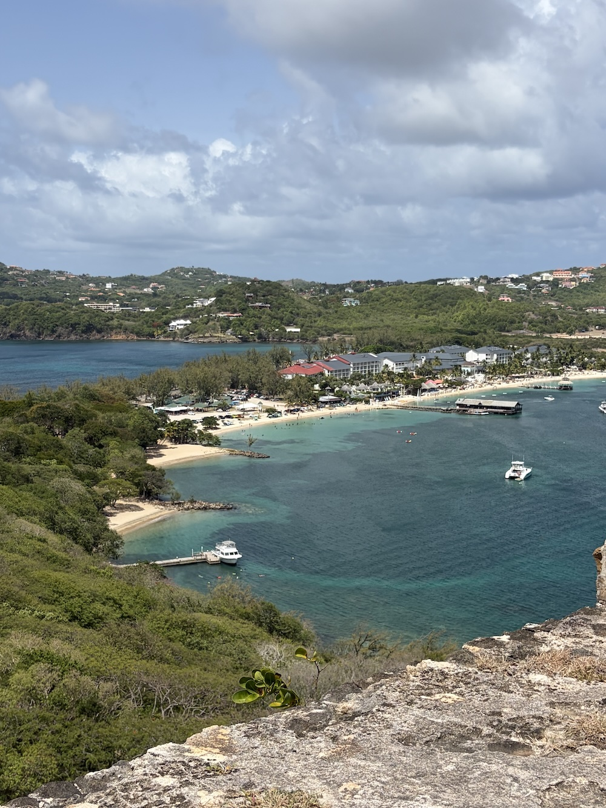

I arrived in Saint Lucia during Carnival in July 2026. The minibuses had largely abandoned their routes, and the taxis were charging $80 for a 45min drive, so I did the only sensible thing and rented a car for just over $100. This introduced me to Saint Lucia's roads, which corkscrew up and down the island's volcanic spine like a rollercoaster designed by someone with a grudge and an affinity for potholes. Predictably, I lodged a wheel in a roadside ditch. Within minutes my host Edmund and roughly half his village had materialized to heave the jeep free, entirely unbidden. It was my first lesson in the fierce communal generosity that turned out to define the place.
The capital, Castries, sits on the north coast, but the island's soul lives further south around Soufrière and its volcanic peaks. Saint Lucia earned the nickname "Helen of the West Indies" for the same reason Helen of Troy earned hers. Everyone wanted it, and they were willing to fight embarrassingly often to get it. Beneath the resorts and rainforest the island nurses a French-African Creole culture, and the local language, Kwéyòl, is French-based even though the British ultimately won the tug-of-war. Improbably for a nation of under two hundred thousand, it has also produced two Nobel laureates, giving it the highest number of Nobel Prizes per capita on the planet. This speck of volcanic rock has out-Nobeled entire continents on a per-person basis.

That "Helen" nickname is not merely poetic. Saint Lucia changed hands between France and Britain fourteen times, a figure so absurd it reads like a clerical error. The two powers wrestled for control of the island's harbours and its sugar wealth, all of it extracted, as everywhere in the region, through the labour of enslaved Africans. The waters just south of the island witnessed one of the decisive naval clashes of the age, the Battle of the Saintes in 1782, in which a British fleet shattered the French and secured Britain's grip on the Caribbean. The endless handovers left a cultural double-exposure that still defines the island today: British institutions layered over a thoroughly French and African everyday life.

Saint Lucia became independent on 22 February 1979. Its flag renders the island's identity in geometry, with a gold triangle set over a larger black-and-white arrowhead on a field of blue. The peaks unmistakably evoke the Pitons, the blue the sea and sky, and the gold the sunshine, while the black and white stand for the cultural union of the island's peoples. For all its turbulent colonial past, the country's proudest modern boast is intellectual. Sir Arthur Lewis won the Nobel Prize in Economics in 1979, and the poet Derek Walcott won it in Literature in 1992. I was surprised at how safe St Lucia was: I felt no issues walking around late at night on my own, and the people were approachable and welcoming. This made navigating the chaotic and undocumented minibus system very manageable.
Nothing announces Saint Lucia like the Pitons, twin volcanic spires that erupt almost vertically out of the sea near Soufrière. Gros Piton stands at roughly 798 metres and Petit Piton at 743, and together they anchor a UNESCO World Heritage Site inscribed in 2004. They are not classic cones but volcanic plugs, the hardened throats of ancient volcanoes left standing after the softer rock around them eroded away. I hiked Gros Piton in a shade under three hours round-trip with a guide named Cameron. Between switchbacks he gave me a candid seminar on Saint Lucian life, from the communal house-building to the two problems he said the country wrestles with most: corruption and the cost of living.

Just inland lies the Qualibou caldera and its Sulphur Springs, which Saint Lucia advertises, with a wonderful lack of embarrassment, as "the world's only drive-in volcano." The claim is generous, but the experience delivers. There are steaming vents, hissing fumaroles, and pools of warm grey mineral mud in which visitors are invited to wallow. I wallowed enthusiastically, coating myself in geothermal mud and relaxing in the warm water. I emerged feeling either rejuvenated or lightly poached, and I was never quite sure which.

At the island's northern tip sits Pigeon Island, now joined to the mainland by a causeway but historically a strategic outpost. It is crowned by the ruins of Fort Rodney. From this hill the British admiral George Rodney kept watch on the French fleet moored across the channel at Martinique, and it was from here that he sailed to win the Battle of the Saintes. I climbed the old fortifications up to Signal Peak. The reward was a sweep of impossibly turquoise water with Martinique floating hazily on the horizon, a view that made the centuries of squabbling over this island feel almost understandable.
